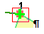
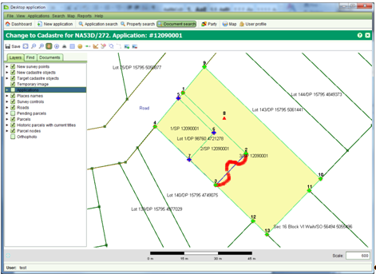
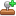

L'écran de Modification du Cadastre permet de diviser ou réunir des parcelles. Il est possible de capturer des informations de nouvelles parcelles obtenues depuis le plan (ex: Levé, Registre, etc). On y accède en commençant le service de Modification du Cadastre depuis l'onglet des services des détails de la demande.
L'écran de Modification du Cadastre Cadastre s'étend au plan cadastral avec les outils supplémentaires pour assister l'édition spatiale des parcelles. Les outils supplémentaires fournis sont:
La fonctionnalité actuelle de la Modification du Cadastre est limitée à de simple parcelles définies par une série de lignes droites, excluant les limites naturelles définies par des segments de droites.
Avant de capturer des données depuis un plan, il est nécessaire d'identifier les parcelles sous-jacentes (alias: parcelles cibles) qui sont divisées ou réunies. Si le Plan n'est pas zoomé à la localisation du plan, utiliser l'onglet Recherche ou les outils de navigation du plan pour localiser les parcelles cibles et utiliser l'outil Sélectionner / Désélectionner Parcelle Cible pour sélectionner (ou désélectionner) les parcelles selon les besoins. Les parcelles cibles d'affichent avec une bordure bleue foncée et un remplissage jaune pâle.
Les Points de Levé représentent les coordonnées enregistrées sur le plan de levé. Ils peuvent être chargés directement dans le plan via un simple click avec l'outil Nouveau / Modifier / Lier les Points Levés , chargés depuis un fichier de levé ou les coordonnées peuvent être entrées manuellement en utilsiant l'écran des Points de Levé accessible en utilisant l'outil de Points de Levé .
Par défaut, les nouveaux points de levé sont créés comme points de limite. Il est possible de changer un point de levé par un point de polygonale
en effaçant la case à cocher "Est une Limite". Les points de polygonale sont affichés dans le plan par des triangles rouges.
Il est aussi possible de lier un point limite à un noeud de parcelle cible en utilisant l'outil Nouveau / Modifier / Lier les Points Levés.
Simplement sélectionner le point de la nouvelle limite et le déplacer près du noeud de la parcelle cible. Le point de la nouvelle limite s'accroche à
la localisation du noeud de la parcelle cible et la croix bleue change en croix verte pour confirmer le lien.
L'écran Point de Levé indique également si le point de limite est lié.
Pour délier le point de limite, effacer la case à cocher "Est Lié".
Pour effacer un point de levé qui a été ajouté par erreur, sélectionner le point de la liste et cliquer sur le bouton Supprimer.
Des coordonnées peuvent aussi être chargées depuis un fichier texte de type CSV.
Charger un fichier de coordonnées CSV requiert d'attacher un fichier .csv comme un document à la demande en utilisant
le bouton Anoujouter Points de l'onglet Documents pour importer les données. Pour des détails sur le format du fichier
et les étapes requises pour importer un fichier de données de levé, voir Importer un Fichier de Données Levées.
Pour assister la capture de la localisation de points de levé depuis le plan, il est possible de charger une image du plan de levé
dans le Plan SOLA et d'utiliser la souris pour capturer la localisation des nouveaux points de levé.
Pour ajouter une image plan au plan, il est nécessaire de d'abord charger l'image dans l'ordinateur.
les formats de fichier supportés par le Plan sont TIFF, PNG et JPEG. Une image de format différent (ex: PDF)
devra être convertie en un format d'image supporté par le Plan avant d'être affiché.
L'outil  Ajouter Image marche en
faisant correspondre deux points sélectionnés sur le plan avec deux points sélectionner sur l'image.
Pour une meilleure précision dans la correspondance, le premier point sélectionné doit être le point en bas à gauche de l'image et le second point
le dessus à droite (ou dessus gauche et bas droite). L'image est alors mise à l'échelle et affichée dans le Plan selon la correspondance.
Ajouter Image marche en
faisant correspondre deux points sélectionnés sur le plan avec deux points sélectionner sur l'image.
Pour une meilleure précision dans la correspondance, le premier point sélectionné doit être le point en bas à gauche de l'image et le second point
le dessus à droite (ou dessus gauche et bas droite). L'image est alors mise à l'échelle et affichée dans le Plan selon la correspondance.
Noter que l'outil actuel d'Ajout Image ne rotationne pas l'image. Si le plan n'a pas une orientation Nord standard,
alors ne pas tenter de numériser depuis le plan car le résultat sera imprécis.
Il est possible de créer de nouvelles parcelles en utilisant l'outil Créer Nouvelle Parcelle  En utilisant l'outil, cliquer chaque point de levé de la nouvelle parcelle en séquence soit dans le sens des aiguilles d'une montre soit l'inverse
et double cliquer sur le point final pour fermer la limite de parcelle.
La nouvelles parcelle apparaîtra avec une bord vert et un remplissage jaune.
En utilisant l'outil, cliquer chaque point de levé de la nouvelle parcelle en séquence soit dans le sens des aiguilles d'une montre soit l'inverse
et double cliquer sur le point final pour fermer la limite de parcelle.
La nouvelles parcelle apparaîtra avec une bord vert et un remplissage jaune.

Si une erreur est faite lors de la créationde la parcelle, cliquer droit pour annuler la forme et recommencer.
Pour éditer l'identifiant de la nouvelle parcelle, utiliser l'outil de liste des parcelles
pour ouvrir l'écran de la liste des parcelles et mettre à jour la première partie de l'appellation comme requise.
La dernière partie est établie selon le numéro de demande et ne peut pas être éditée.
Il est également possible d'utiliser la liste des parcelles pour supprimer une nouvelle parcelle si elle est créée par erreur, ainsi que pour établir la superficie officielle.
L'outil de création de nouvelles parcelles permet de créer des nouvelles parcelles avec de simples lignes doirtes où les points de début et de fin
de chaque ligne doit être un point de levé. Si la parcelle requiert une limite irrégulière (alias limite naturelle),
il est possible d'utiliser les outils de Modification Limite pour modifier la ligne droite de la limite de la nouvelle parcelle.
IMPORTANT: Avant d'utiliser les outils de Modification de Limite, s'assurer d'ajouter toutes les parcelles qui vont partager la limte irrégulière
en tant que parcelles cibles. Modifier une parcelle d'un seul côté de la limite résultareit en vides et superpositions se formants dans le réseau
cadastral. Faire ceci peut entrainer d'enregistrer des parcelles qui ne sont pas enregistrées dans le plan.
Il est également nécessaire de recréer des nouvelles parcelles au-dessus de toutes les parcelles cibles en utilisant l'outil Créer Nouvelles Parcelles
 avant d'utiliser les outils de Modification de Limite. L'exception à cette règle est où la limite irrégulière forme
la rive d'un lac ou de la mer. Dans ce cas, il est peu probable qu'il y ait une parcelle à mettre à jour.
avant d'utiliser les outils de Modification de Limite. L'exception à cette règle est où la limite irrégulière forme
la rive d'un lac ou de la mer. Dans ce cas, il est peu probable qu'il y ait une parcelle à mettre à jour.
L'outil Sélectionner la Limite  peut être utilisé
pour identifier la ou les lignes de limite d'une nouvelle parcelle qui doit être transformée en limite irrégulière.
Utiliser l'outil pour sélectionner les points de départ et de fin de la limite irrégulière en déplaçant une petite boîte de sélection autour
du noeud approprié de la nouvelle parcelle lorsqu'indiqué par l'outil.
peut être utilisé
pour identifier la ou les lignes de limite d'une nouvelle parcelle qui doit être transformée en limite irrégulière.
Utiliser l'outil pour sélectionner les points de départ et de fin de la limite irrégulière en déplaçant une petite boîte de sélection autour
du noeud approprié de la nouvelle parcelle lorsqu'indiqué par l'outil.

L'ordre de sélection des points de départ et de fin de la limite irrégulière est important.
L'outil va mettre en surbrillance toues les lignes de limite de parcelles dans le sens des aiguilles d'une montre depuis le point de départ jusqu'au point de fin.
Les lignes de limite en surbrillance indiquent les ligne de limite qui vont être remplacées par la nouvelle limite irrégulière.
Si la mauvaise séquence de lignes de limite est mise en surbrillance, répéter la sélection en s'assurant que le point de fin est sélectionné comme le point de départ
et vice versa.
Sélectionner une limite à modifier active l'outil de Modification de Limite
Utiliser cet outil pour reformer la limite de parcelle en utilisantla souris.

Si la nouvelle limite couvre une large étendue, il peut être difficile d'utiliser l'outil de Modification de Limite
pour créer la nouvelle limite en une seule fois. Dans cette situation, créer une limite initiale représentant prroximativement la nouvelle limite requise.
Ensuite, zoomer et utiliser les outiles de Modification de Limite pour améliorer les segments de la limite initiale.
LEs modifications effectuées au cadastre restent en attente jusqu'à ce que la demande contenant le service de modification du cadastre est approuvée. Il est possible d'approuver la demande en complètant tous les services de la demande et approuver la demande en utilisant l'outil Approbation  dans le menu déroulant des actions de la demande. Les nouvelles parcelles s'affichent comme parcelles courantes dans le Plan.

Voir aussi